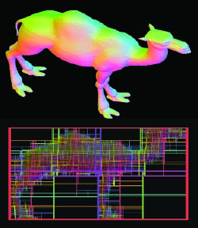
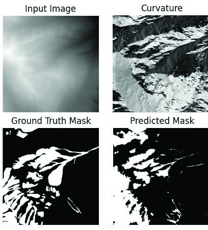
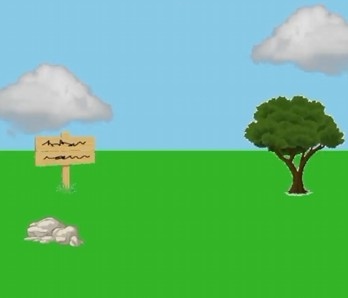

About Me
I am a computer science Ph.D. student at the University of British Columbia, advised by Dr. Alla Sheffer. I research 3D geometry in the field of computer graphics, with a particular interest in neural geometry and its applications in shape generation, compression, rendering and more.
I'm always open to interesting research opportunities (including collaborations & internships) and keen to discuss research with likeminded individuals, so don't hesitate to reach out!
Research
- SIGGRAPH 2026
-
Honours Thesis 2025
FedShufFLe: Adaptive Client Scheduling for Mitigating Statistical Heterogeneity in Federated Learning
Oliver Oxford, Ivan Beschastnikh (Thesis supervisor)
Experience
-
Sep 2025-present
Teaching Assistant - University of British Columbia
CPSC 425 Computer vision (2 terms), CPSC 424 Geometric Modelling (1 term) -
May-Dec 2023
Full Stack Software Development Intern - Veritree
Developed full stack services from start to finish. Projects involved network systems, database management, REST API development and frontend dashboards. -
Jan-Aug 2022
Cloud Business Office Intern - Cenovus Energy Inc.
Scripting, data collection, analysis, and reporting on cloud infrastructure.
Projects
-

BVH Accelerated Mesh Raytracing – 2025From-scratch BVH accelerated software mesh ray tracing using custom shaders, OpenGL and C++.
Code -

Avalanche Risk Prediction – 2024U-Net CNN model to predict avalanche risk based on mountain topology.
Paper and Code -

AP Computer Science capstone – 2020My first introduction to computer graphics: attempting to model a 3D environment using basic trigonometry and high school math.
Code